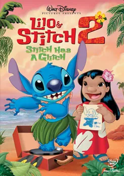

The genetics
Stitch is a creature made in a laboratory, an "illegal genetic experiment" built by Jumba, a former evil genius, as a weapon of destruction. This sequel turns the premise into a medical drama: because his creation was cut short when Jumba was arrested, Stitch has a built-in defect that triggers seizures, brings back his destructive programming and will eventually kill him. Jumba, now a member of the family, is shown as a caring if eccentric scientist who works frantically to save his creation, improvising a machine from household appliances after the first one explodes. In the end, though, it is Lilo's love rather than the machine that revives Stitch, as Jumba himself concludes; the film's message is that family and acceptance matter more than how one was made. The "molecular charge" is cartoon science, not genetics.
How genetics is portrayed
- Overall portrayal of genetics
- mixed The genetic experiment gave Lilo her family member and its creator is sympathetic, but the defect from that experiment causes the crisis and the film makes love, not science, the cure.
- Outcome of the genetic intervention
- mixed Stitch, the product of the experiment, is a beloved family member, but his botched creation causes seizures, violence against his will and near death, which he survives through Lilo's love rather than the science.
- Dr. Jumba Jookiba
- hero Aim: personal, benevolent (positive). Jumba created Stitch as an illegal genetic experiment, and in this film works to save him from the defect left by his interrupted creation, building a recharging machine; he is a lovable, reformed mad scientist on the family's side.
The story
On Kauai, Lilo prepares an original hula for the May Day competition her late mother once won, while her alien friend Stitch, an illegal genetic experiment, has nightmares about reverting to his destructive programming. Soon he starts having seizures and turning violent against his will. His creator, Dr. Jumba Jookiba, finds that his molecular structure was never fully charged because his creation was interrupted by Jumba's arrest; unless fixed, Stitch will die. Lilo, absorbed by the competition, thinks Stitch is misbehaving on purpose and grows angry with him, while Jumba builds a recharging machine from household objects. When a seizure makes Stitch scratch Lilo's face, he flees in Jumba's spaceship and crashes. Lilo abandons the contest to find him; placed in the machine, Stitch seems to die, but Lilo's declaration that he is her family revives him, and the family performs the hula together that night.